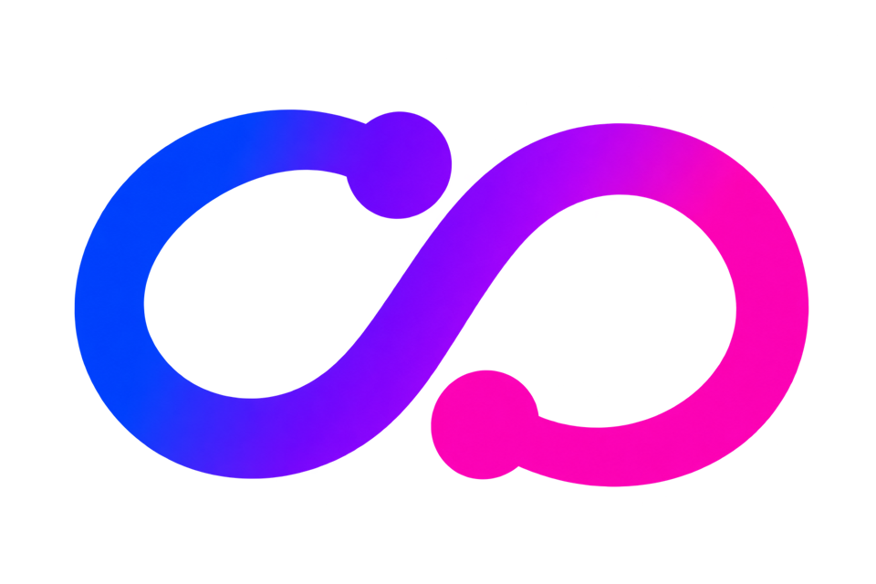

Start with your site.
Record pageviews, selected clicks, sibling-host link clicks, and custom events. A server-set cookie connects activity to a visitor.

DataSynthCONNECTIONSBecome a demo partner ↗Turn visitor activity into a connected marketing journey. Record events on your own WordPress server. Easily create custom connections to send them to almost any server that accepts your data.
Keep the event trail on your site, with the controls to decide what happens next.
Record pageviews, selected clicks, sibling-host link clicks, and custom events. A server-set cookie connects activity to a visitor.
Inspect a visitor’s timeline, source IDs, and cross-domain hops in WordPress. See leads and exactly which fields you keep.
Easily create your own connections for almost any server. Start with a JSON webhook or add a custom connector; scheduling, queues, retries, and backfill stay in the core.
See how a visitor arrives, what they explore, and when they become a lead. Pass visitor IDs, ad click IDs, and UTMs to configured sibling hosts.
Decide whether each field is stored, hashed, or dropped. Configure IP handling and retention. Inspect the policy in the “What we store” screen.
Choose around your workflow: lead attribution, ad-platform integrations, or an extensible local event pipeline.
| What you need | DataSynth Connections | HandL UTM Grabber | PixelYourSite Pro |
|---|---|---|---|
| Primary focus | Local event collection & configurable delivery | Lead attribution & form-to-CRM workflows | Pixels & ad-platform conversion APIs |
| Journey & source context | Visitor timelines, source IDs & sibling-host handoff | UTMs, click IDs, journey & form attribution | Events & campaign context for supported integrations |
| Destination workflow | Your own custom connections & generic JSON webhooks | Form integrations, Zapier & Make workflows | Built-in ad integrations; some require add-ons |
| Delivery controls | Per-connection queues, scheduling, retry & backfill | Check current vendor documentation for your workflow | Check current vendor documentation for your workflow |
| Best starting point | You want to own the event trail and extend destinations | You want campaign details attached to form leads | You want supported ad-platform integrations |
Based on the supplied DataSynth specification and vendor pages reviewed October 8, 2026. Features vary by plan. UTM Grabber ↗ PixelYourSite Pro ↗
DataSynth Connections is currently in demo. We’re looking for companies and agencies to help shape the plugin around real marketing workflows.
Bring your WordPress site and the servers you want to connect. Let’s explore your use case together.
The browser script collects visitor interactions and posts them to your WordPress server. Storage and onward delivery happen on your server. Events that never reach the collector cannot be recovered.
Yes. Start with the generic JSON webhook to send data to almost any server that accepts JSON POST requests. For a custom API or payload format, a developer can add a connector through dsc_register_connectors without changing the core. The plugin handles scheduling, queues, retries, and backfill for your connections.
Use a custom connector or your own webhook infrastructure to meet the destination’s authentication and event-format requirements. Each platform’s API requirements still apply.
Backfill lets you send earlier recorded events to a newly enabled connection, subject to the data still being available under your retention settings.
It honors Global Privacy Control and Do Not Track in both the browser and server. Consent-banner integration is not specified; review how collection fits your site’s consent setup before launch.
WP-Cron checks due connections every minute. Each connection has its own delivery interval, defaulting to 60 seconds. Actual timing depends on your WordPress scheduling setup; WP-CLI can also drive processing.